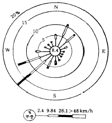
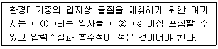
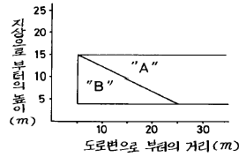

대기환경산업기사 (2004-09-05 기출문제)
1과목: 대기오염개론
1. 하루에 2% 황(S)을 포함한 석탄 100,000㎏을 쓰는 화력발전소가 있다. 모든 황이 굴뚝을 통해 배출된다고 할 때, 매초 방출되는 SO2의 양은? (단, 황은 모두 SO2로 전환되며, 발전소는 1일 24시간 가동하는 것으로 가정할 것)
- 92.6g
- 46.3g
- 34.7g
- 23.1g
(정답률: 알수없음)

2. 주요 대기오염물질인 '염화수소'를 배출하는 업종과 가장 거리가 먼 것은?
- 염산제조
- 소오다공업
- 플라스틱 공장
- 피혁공장
(정답률: 알수없음)
3. 가솔린을 연료로 사용하는 승용차 운행시 탄화수소가 가장 많이 배출되는 엔진 작동상태는?
- 감속
- 운행
- 가속
- 공전
(정답률: 알수없음)
4. 고속도로 상의 교통밀도가 5000대/hr이고, 차량의 평균속도가 100km/hr이다. 차량 한대의 탄화수소 방출량이 2×10-2g/sec· 대, 일 때 고속도로에서 방출되는 탄화수소의 양(g/sec· m)은?
- 10-1
- 10-2
- 10-3
- 10-4
(정답률: 알수없음)
5. Richardson수에 관한 설명으로 틀린 것은?
- 기계적 난류와 대류 난류중 어느 것이 지배적인가를 추정할 수 있다.
- 무차원 수이다.
- 큰 음의 값을 가지면 대류가 지배적이어서 바람이 약하게 되어 강한 수직운동이 일어난다.
- 0에 접근하면 분산이 증가한다.
(정답률: 알수없음)
6. 다이옥신의 대표적인 물리적 성질을 알맞게 나타낸 것은?
- 열적불안정, 높은 증기압, 높은 수용성
- 열적안정, 낮은 증기압, 높은 수용성
- 열적불안정, 높은 증기압, 낮은 수용성
- 열적안정, 낮은 증기압, 낮은 수용성
(정답률: 알수없음)
7. 다음 그림은 풍향과 풍속의 빈도 분포를 나타낸 바람 장미도(wind rose)이다. 주 풍향은?

- 북동풍
- 동남풍
- 서풍
- 남서풍
(정답률: 알수없음)
8. Los Angeles 스모그 현상은 다음 중 어떤 경우에 해당되는가?
- 복사형 역전
- 전선형 역전
- 침강성 역전
- 방사성 역전
(정답률: 알수없음)
9. 황화수소가 식물에 미치는 영향에 관한 설명으로 틀린 것은?
- 1ppm이하에서도 피해가 나타나며 독성이 강한 편이다
- 코스모스, 오이, 토마토, 담배등이 민감한 식물이다
- 복숭아, 딸기, 사과등은 강한 식물이라 할 수 있다
- 주로 어린 잎이나 새싹에 예민하게 작용한다
(정답률: 알수없음)
10. 정상 대기중에는 CO2가 약 350ppm 정도가 존재한다. 이것이 대기중에 수분에 포화되었을 때의 산도(pH)는?
- 약 4.3
- 약 5.7
- 약 6.3
- 약 6.8
(정답률: 알수없음)
11. 대기성분의 부피비율이 큰 순서대로 나타낸 것은? (단, 산소, 질소는 생략)
- 아르곤-탄산가스-네온-헬륨
- 아르곤-탄산가스-헬륨-네온
- 아르곤-탄산가스-메탄-일산화탄소
- 아르곤-탄산가스-일산화탄소-메탄
(정답률: 알수없음)
12. 굴뚝에서 배출되어지는 연기의 모양과 대기상태를 설명한 것 중 환상형(looping)에 관한 설명으로 가장 알맞는 것은?
- 전체 대기층이 강한 안정시에 나타나며, 지상에는 오염물질의 영향이 매우 크다.
- 전체 대기층이 중립일 경우에 나타나며, 연기모양의 요동이 적은 형태이다.
- 상층이 불안정하고 하층이 안정할 경우에 나타나며, 연기가 서서히 확산된다.
- 전체 대기층이 불안정할 경우에 나타나며, 연기의 모양이 상하로 요동이 심하며, 순간적으로 지상에 고농도가 될 수 있다.
(정답률: 알수없음)
13. 다음 역사적 대기오염 사건이 올바르게 설명된 것은?
- Krakatau섬 사건 - 황산공장의 폭발로 발생
- Poza Rica사건 - 멕시코 공업지대에서 황화수소 누출
- Meuse Valley사건 - 미국 펜실바니아 주 피츠버그시의 남쪽에 위치한 공업지대에서 발생
- Bophal시 사건 - 인도 보팔시에서 아연정련소의 황산미스트 유출로 발생
(정답률: 알수없음)
14. 분진농도가 150㎍/m3이고, 상대습도가 70%인 상태의 대도시에서 가시거리는 몇 km인가? (단, A=1.25)
- 5.4
- 8.3
- 10.5
- 12.2
(정답률: 알수없음)
15. 지상으로부터 500m까지의 평균 기온감률은 1.2℃/100m이다. 100m 고도의 기온이 17℃라 하면 고도 400m 에서의 기온은?
- 10.6℃
- 11.8℃
- 12.2℃
- 13.4℃
(정답률: 알수없음)
16. 굴뚝의 유효고도가 60m이다. 일반적인 조건이 같을 때 최대 지표농도를 절반으로 감소시키려면 유효고도(m)를 얼마만큼 증가시켜야 하는가? (단, Sutton식 적용)
- 12.5m
- 15.6m
- 20.7m
- 24.9m
(정답률: 알수없음)
17. 대기의 수직온도 분포에 의한 분류로 바르게 된 것은?
- 대류권 - 중간층 - 성층권 - 열권
- 대류권 - 열권 - 중간층 - 성층권
- 대류권 - 성층권 - 열권 - 중간층
- 대류권 - 성층권 - 중간층 - 열권
(정답률: 알수없음)
18. 어떤 연돌의 배출가스 중 SO2 농도가 480ppm이었다. SO2의 배출허용기준이 400mg/m3 이하라면 이 배출시설에서 줄여야 할 아황산가스의 농도는 몇 mg/m3인가? (단, 표준상태 기준)
- 462
- 625
- 852
- 971
(정답률: 알수없음)
19. 지상 10m에서의 풍속이 3m/s라면 60m에서의 풍속은? (단, 대기안정도와 지면거칠기에 의해 결정되는 p=0.4)
- 5.2m/s
- 5.5m/s
- 6.1m/s
- 6.8m/s
(정답률: 알수없음)
20. 대기중의 탄화수소(HC)에 대한 설명중 틀린 것은?
- 인위적 발생량이 자연적 발생량보다 많다.
- 포화탄화수소, 불포화탄화수소로 나뉜다.
- 올레핀계탄화수소가 방향족탄화수소보다 반응성이 크다.
- 불포화탄화수소는 이중결합 또는 3중 결합을 갖고 있다.
(정답률: 알수없음)
2과목: 대기오염 공정시험 기준(방법)
21. 굴뚝에서 배출되는 가스중 일산화탄소(CO)를 분석하는 방법과 가장 거리가 먼 것은?
- 비분산적외선분석법
- 정전위전해법
- 가스크로마토그래피법
- 이온크로마토그래피법
(정답률: 알수없음)
22. 굴뚝등에서 배출되는 벤젠을 흡광광도법으로 분석하기 위한 흡수액은?
- 질산암모늄+황산
- 수산화나트륨용액
- 과산화수소+황산
- 아연아민착염용액
(정답률: 알수없음)
23. 취급 또는 저장하는 동안에 기체 또는 미생물이 침입하지 않도록 내용물을 보호하는 용기는?
- 밀폐용기
- 기밀용기
- 밀봉용기
- 차광용기
(정답률: 알수없음)
24. 굴뚝배출가스중의 아황산가스를 연속적으로 자동측정하는 방법과 가장 거리가 먼 것은?
- 용액전도율법
- 적외선흡수법
- 불꽃광도법
- 광투과법
(정답률: 알수없음)
25. 원형굴뚝의 반경이 1.6m인 경우 측정점수는?
- 12
- 16
- 20
- 24
(정답률: 알수없음)
26. 피토우관을 사용하여 가스 유속을 측정할 때 다음과 같은 결과를 얻었다. 유속은? (단, 피토우관 계수 : 1.2, 피토우관에 의한 동압 : 12mmH2O, 연도내 습윤 배출가스의 단위체적당 질량 : 1.3 Kg/m3)
- 12.3 m/sec
- 13.5 m/sec
- 14.7 m/sec
- 16.2 m/sec
(정답률: 알수없음)
27. 굴뚝에서 배출되는 가스중의 벤젠을 흡광광도법으로 분석 측정하는 경우 시료채취량 10ℓ 인 경우 분석에 적합한 벤젠 농도범위는?
- 0.1∼2 V/Vppm
- 2∼20 V/Vppm
- 25∼250 V/Vppm
- 250 V/Vppm 이상
(정답률: 알수없음)
28. 환경대기 중 먼지 측정 방법인 로우볼륨에어 샘플러법에 관한 설명중 옳지 않은 것은?
- 입경이 10㎛이상의 먼지는 분립장치에 의해 제거된다
- 흡인공기 유량은 1.2∼1.7L/분 범위가 되도록 한다
- 분립장치는 사이클론 방식과 다단형 방식이 있다
- 포집용여과지는 가스상물질의 흡착이 적고 흡습성과 대전성이 적어야 한다
(정답률: 알수없음)
29. 다음중 오염물질과 측정법의 연결이 잘못된 것은?
- 염화수소 - 티오시안산 제2수은법,오르토톨리딘법
- 황산화물 - 침전적정법, 중화적정법
- 시안화수소 - 질산은적정법, 피리딘피라졸론법
- 포름알데히드 - 크로모트로핀산법, 아세틸아세톤법
(정답률: 알수없음)
30. 일반시험방법 중 시약, 시액, 표준물질에 관한 설명으로 알맞지 않은 것은?
- '약'이란 그 무게 또는 부피에 대하여 ± 10 이상의 차가 있어서는 않된다.
- 시험에 사용하는 표준품은 원칙적으로 특급시약을 사용한다.
- 표준약을 조제하기 위한 표준용시약은 따로 규정이 없는 한 데시케이터에 보존된 것을 사용한다.
- 표준품을 채취할 때 표준액이 정수로 기재되어 있는 경우에는 기재수치에 '약'자를 붙여 사용할 수 없다.
(정답률: 알수없음)
31. 배출가스중 황산화물을 아르세나조 Ⅲ법에 의해 분석하고자 할 때 적정시약과 종말점의 색깔은?
- N/100 수산화나트륨용액 - 청색
- N/10 수산화나트륨용액 - 녹색
- N/100 초산바륨용액 - 청색
- N/10 초산바륨용액 - 녹색
(정답률: 알수없음)
32. 흡수액으로 디에틸아민동용액을 사용하는 분석대상가스는?
- 이황화탄소
- 황화수소
- 아황산가스
- 황산화물
(정답률: 알수없음)
33. ( )안에 알맞는 것은? (단, 고용량 공기포집법 사용)

- ① 0.5㎛, ② 99
- ① 0.5㎛, ② 95
- ① 0.3㎛, ② 99
- ① 0.3㎛, ② 95
(정답률: 알수없음)
34. 다음 그림은 환경기준시험 방법 중 비산먼지 측정기의 도로로부터의 거리와 시료채취 높이이다. "B"영역에 해당되는 곳은 다음에서 어느 것인가?

- 설치 가능 영역
- 설치 불가능 영역
- 경우에 따라 설치 가능 영역
- 경우에 따라 설치 불가능 영역
(정답률: 알수없음)
35. 원자 흡광광도법에 대한 원리를 가장 적절하게 설명한 것은?
- 여기상태의 원자가 기저상태로 될 때 특유의 파장량을 흡수하는 현상 이용
- 기저상태에서 여기상태로 될 때 특유 파장량을 흡수하는 현상 이용
- 기저상태의 원자가 원자증기층을 투과하는 특유 파장의 빛을 흡수하는 현상 이용
- 여기상태의 원자가 원자증기층을 투과하는 특유 파장을 흡수하는 현상 이용
(정답률: 알수없음)
36. 굴뚝 배출가스중의 납을 흡광광도법으로 측정하여 다음과 같은 실험치를 얻었다. 배출가스중의 납농도는? (단, 건조시료 가스채취량(0℃, 760mmHg) : 500L, 시험용액 전량 : 100mL, 검량선으로 부터 구한 시험용액 1mL중 납량 : 0.⑤㎍)
- 0.02 mg/Sm3
- 0.015 mg/Sm3
- 0.25 mg/Sm3
- 0.01 mg/Sm3
(정답률: 알수없음)
37. 굴뚝에서 배출되는 가스중 질소산화물 측정을 위해 페놀디술폰산법을 적용하는 경우, 분석하는데 가장 적당한 시료중의 질소산화물 농도는?
- 100 V/Vppm
- 300 V/Vppm
- 500 V/Vppm
- 800 V/Vppm
(정답률: 알수없음)
38. 배출가스내 불소화합물을 분석할 때 여과재 재질로 가장 알맞는 것은?
- 카아보란덤
- 알칼리성분이 없는 유리솜
- 소결유리
- 알칼리성분이 없는 실리카솜
(정답률: 알수없음)
39. 직접관능법 악취도와 악취감도를 알맞게 짝지은 것은?
- 악취도 2 - 감지취기(Threshold)
- 악취도 3 - 강한취기(Strong)
- 악취도 4 - 참기 어려운 취기(Over strong)
- 악취도 5 - 극심한 취기(Very strong)
(정답률: 알수없음)
40. 카드뮴화합물 분석을 위한 전처리 법으로 저온회화법을 이용할 때 회화온도기준으로 적절한 것은?
- 100℃ 이하
- 200℃ 이하
- 300℃ 이하
- 500℃ 이하
(정답률: 알수없음)
3과목: 대기오염방지기술
41. 높이 40cm 폭 60cm인 장방형 덕트에 배기가스가 200m3/hr로 공급되고 있다. 이 배기가스의 점도가 1.84 × 10-5kg/mㆍsec, 밀도는 1.3 kg/m3 일 때 레이놀즈수(Reynolds number)는? (단, 덕트의 상당직경 De=2(높이×폭) / (높이+폭))
- 약 4600
- 약 5700
- 약 6200
- 약 7800
(정답률: 알수없음)
42. 지름이 20cm인 Cyclone에서 가스접선 속도가 5m/sec이면 분리 계수는?
- 25.5
- 18.5
- 12.8
- 9.7
(정답률: 알수없음)
43. 굴뚝 배출가스중의 수분을 측정한 결과 건조가스 1m3당 150g이었다. 건조가스에 대한 수분의 용량비는? (단, 표준상태를 기준으로 한다.)
- 27.8%
- 23.6%
- 18.7%
- 12.4%
(정답률: 알수없음)
44. 직경이 40cm, 유효높이 5.5m의 원통형 백필터를 사용하여 먼지를 20m3/sec로 집진하려한다. 이 때 여과속도를 0.01m/sec로 할 경우 백필터의 소요수는?
- 280개
- 285개
- 290개
- 295개
(정답률: 알수없음)
45. Stoke's의 침강속도식에서 침강속도를 직접 좌우하는 요인과의 비례 관계 중 옳지 않는 것은?
- 침강속도는 중력가속도에 비례한다.
- 침강속도는 입자의 직경의 제곱에 비례한다.
- 침강속도는 공기의 점도에 반비례한다
- 침강속도는 입자밀도와 공기의 밀도의 차에 반비례한다.
(정답률: 알수없음)
46. 완전연소를 기대할 수 있으며 연료와 산화제의 혼합이 이상적일 때의 등가비(ø)는?
- ø = 1
- ø ＜ 1
- ø ＞ 1
- ø = 0
(정답률: 알수없음)
47. 탄소, 수소, 산소, 황의 중량 % 가 86%, 4%, 8%, 2%인 중유의 연소에 필요한 이론공기량(Sm3/kg)은?
- 약 5.5
- 약 6.5
- 약 7.5
- 약 8.5
(정답률: 알수없음)
48. 함진가스를 매시간당 2500m3 씩 처리하는 집진장치가 있다. 입구의 먼지농도가 22.5g/m3일 때 이 집진장치에서 포집되는 먼지량은 55kg/hr 이었다면 출구의 먼지농도(g/m3)는? (단, 표준상태 기준)
- 0.1
- 0.5
- 1.0
- 1.5
(정답률: 알수없음)
49. 연소가스를 분석한 결과, (CO2) = 15.5 %, (O2) = 6.5 %일 때 과잉공기계수(m)는? (단, 완전연소 기준)
- 1.45
- 1.55
- 1.65
- 1.75
(정답률: 알수없음)
50. 다음 집진장치중 압력손실이 가장 작은 것은?
- 전기집진기
- 여과집진기
- 세정집진기
- 원심력집진기
(정답률: 알수없음)
51. 다음 중 원심력 집진장치에서 선회기류의 흐트러짐을 방지하고 집진된 먼지의 재비산 방지를 위한 운전방법은?
- 블로우다운(blow down)
- 펄스젯트(pulse jet)
- 기계적진동(mechanical shaking)
- 공기역류(reverse air)
(정답률: 알수없음)
52. 프로판 가스 100kg을 액화시켜 만든 LPG가 기화될 때의 체적은? (단, 기화시의 온도 및 압력은 25℃, 820mmHg로 가정)
- 51.5 m3
- 59.4 m3
- 66.7 m3
- 72.4 m3
(정답률: 알수없음)
53. 황함량이 3%인 중유를 매시간 2,000 ㎏ 을 완전연소하면 발생하는 SO2의 량은? (단, 황성분은 모두 SO2로 된다고 가정함 )
- 58 Sm3/hr
- 42 Sm3/hr
- 63 Sm3/hr
- 32 Sm3/hr
(정답률: 알수없음)
54. 2대의 집진장치를 직렬로 연결 했을 때 2차 집진율은 96.0 %이고, 총집진율은 99.0 %이었다면, 1차 집진율(%)은 얼마인가?
- 45.0
- 60.0
- 75.0
- 85.0
(정답률: 알수없음)
55. 어느 보일러에 사용하고 있는 중유의 고발열량이 10,000Kcal/kg이라 하면 이 연료의 저발열량은? (단, 연료중의 수소는 12%, 수분 0.3% 이다.)
- 9,850 Kcal/kg
- 9,350 Kcal/kg
- 9,160 Kcal/kg
- 9,010 Kcal/kg
(정답률: 알수없음)
56. 집진장치의 압력손실이 400mmH2O, 가스처리량이 50m3/sec, 송풍기의 효율은 75%이다. 이 장치의 소요동력은?
- 183kw
- 261kw
- 351kw
- 356kw
(정답률: 알수없음)
57. 다음 중 전기집진장치로 함진가스를 처리할 때 입자의 겉보기 고유저항이 높을 경우에 대책으로 틀린 것은?
- NH3 를 스프레이로 주입한다.
- 처리가스의 온도를 조절하거나 습도를 높인다.
- 황산을 조절제로 주입한다.
- 타격빈도를 높인다.
(정답률: 알수없음)
58. 흡수를 이용한 유해가스처리방법인 충전탑에 관한 설명으로 틀린 것은?
- 기체분산형 흡수장치이다.
- [탑의 직경/충전제 직경]= 8~10일 때 편류현상이 최소가 된다.
- 범람점에서의 가스속도는 충전제를 불규칙하게 쌓았을 때 보다 규칙적으로 쌓았을 때가 더 크다.
- 충전제를 불규칙적으로 충전하는 방법은 접촉면적은 크나 압력손실이 크다.
(정답률: 알수없음)
59. 미분탄연소의 장점을 열거하였다. 옳지 않은 것은 ?
- 연료의 표면적이 크고 공기와의 접촉이 좋기 때문에 과잉 공기가 적어도 완전연소가 가능하다.
- 연소의 조절이 쉽고 점화,소화시의 손실이 적다.
- 부하의 변동에 용이하게 적용된다.
- 완전연소로 인하여 배출 먼지량이 적다.
(정답률: 알수없음)
60. 환기를 위한 통풍방식중 흡인통풍에 관한 내용과 가장 거리가 먼 것은?
- 굴뚝의 통풍저항이 큰 경우에 적합하다.
- 송풍기의 점검 및 보수가 용이하다.
- 노내압이 부압으로 역화의 우려가 없다.
- 이젝터를 사용할 경우 동력이 불필요하다.
(정답률: 알수없음)
4과목: 대기환경 관계 법규
61. 자가측정 항목이 아닌것은?
- 황산화물
- 매연
- 먼지
- 비산먼지
(정답률: 알수없음)
62. 모든 배출시설의 시안화수소의 배출허용기준은?
- 2ppm 이하
- 3ppm 이하
- 5ppm 이하
- 10ppm 이하
(정답률: 알수없음)
63. 대기중 미세먼지(PM-10)의 환경기준으로 적절한 것은? (단, 24시간 평균치 기준)
- 100㎍/m3 이하
- 150㎍/m3 이하
- 200㎍/m3 이하
- 250㎍/m3 이하
(정답률: 알수없음)
64. 경유를 사용하는 자동차의 배출가스중 대통령령이 정하는 오염물질이 아닌 것은?
- 이산화탄소
- 질소산화물
- 입자상물질
- 매연
(정답률: 알수없음)
65. 악취측정 방법 중 기기분석법에 규정된 악취물질이 아닌것은?
- 디옥신
- 이황화메틸
- 암모니아
- 스티렌
(정답률: 알수없음)
66. 다음 위임업무 보고사항중 보고횟수가 연 4회에 해당되는 것은?
- 비산먼지발생대상사업장 지도, 점검실적
- 굴뚝자동측정기의 정도검사현황
- 악취배출시설 지도, 점검실적
- 수입자동차 배출가스 인증 및 검사현황
(정답률: 알수없음)
67. 환경부장관이 설치하는 대기오염측정망의 종류중 도시지역의 휘발성유기화합물 등의 농도를 측정하기 위한 것은?
- 특정대기유해물질측정망
- 유해대기물질측정망
- 지역배경농도측정망
- 광화학오염물질측정망
(정답률: 알수없음)
68. 대기환경기준이 설정되어 있지 않는 오염물질은?
- 아황산가스
- 일산화탄소
- 탄화수소
- 이산화질소
(정답률: 알수없음)
69. 다음 중 대기환경보전법 시행규칙에 규정된 자동차연료용 첨가제가 아닌 것은?
- 매연억제제
- 청정분산제
- 유동성향상제
- 윤활세척제
(정답률: 알수없음)
70. 조업정지에 갈음하여 부과할 수 있는 과징금의 최대액수로 알맞은 것은?
- 1억원
- 2억원
- 3억원
- 5억원
(정답률: 알수없음)
71. 다음 대기오염물질 중 특정대기유해물질에 속하는 것은?
- 브롬 및 그 화합물
- 아연 및 그 화합물
- 니켈 및 그 화합물
- 구리 및 그 화합물
(정답률: 알수없음)
72. 환경부령이 정한 환경기술인(환경관리인)의 준수사항을 이행하지 아니한 자에 대한 행정처분기준으로 적절한 것은?
- 200만원이하의 벌금
- 200만원이하의 과태료
- 100만원이하의 과태료
- 50만원이하의 과태료
(정답률: 알수없음)
73. 일반오염물질의 배출허용기준초과 일일오염물질배출량은 소숫점이하 몇째자리까지 계산하는가?
- 첫째
- 둘째
- 셋째
- 넷째
(정답률: 알수없음)
74. 대기오염물질 배출시설 및 방지시설의 시운전기간은 몇일인가?
- 가동개시일부터 15일까지를 말한다.
- 가동개시일부터 30일까지를 말한다.
- 가동개시일부터 45일까지를 말한다.
- 가동개시일부터 60일까지를 말한다.
(정답률: 알수없음)
75. 사업자가 배출시설 및 방지시설의 운전미숙으로 인한 개선 계획서 제출시 첨부되어야 할 내용이 아닌 것은?
- 오염물질 발생량
- 방지시설의 처리능력
- 배출허용기준 초과사유 및 대책
- 공사기간 및 공사비
(정답률: 알수없음)
76. 대기환경 규제지역을 관할하는 시도지사는 당해지역이 대기환경 규제지역으로 지정고시된 후 몇 년 이내에 당해 지역을 환경기준을 달성유지하기 위한 계획을 수립하여야 하는가?
- 1년
- 2년
- 3년
- 5년
(정답률: 알수없음)
77. 현장에서 배출허용기준의 초과여부를 판정할 수 있는 오염물질의 경우에는 오염도 검사기관에 오염도 검사를 의뢰하지 않을 수 있다. 다음 중 현장에서 배출허용기준 초과여부를 판정할 수 있도록 대기환경보전법령에 규정된 오염물질은?
- 이황화탄소
- 일산화탄소
- 황화수소
- 염소
(정답률: 알수없음)
78. 초과부과금의 부과대상이 아닌 오염물질은?
- 암모니아
- 이황화탄소
- 염화수소
- 질소산화물
(정답률: 알수없음)
79. 대기오염경보에 대한 설명 중 틀린 것은?
- 시· 도지사는 대기오염도가 환경기준을 초과하여 주민의 건강· 재산이나 동식물의 생육에 중대한 위해를 가져올 우려가 있다고 인정되는 때에는 당해 지역에 대하여 대기오염경보를 발령할 수 있다.
- 대기오염경보의 발령사유가 소멸된 때에는 시도지사는 즉시 이를 해제하여야 한다.
- 환경부장관은 대기오염경보가 발령된 지역에 대해서 사업장의 조업단축을 명할 수 있다.
- 대기오염경보의 대상지역, 대상오염물질, 발령기준 경보단계 및 경보단계별조치사항등에 관하여 필요한 사항은 대통령령으로 정한다.
(정답률: 알수없음)
80. 대기환경보전법 규정에 의한 기후 생태계변화 유발물질이라 볼수 없는 것은?
- 메탄
- 이산화황
- 아산화질소
- 과불화탄소
(정답률: 알수없음)